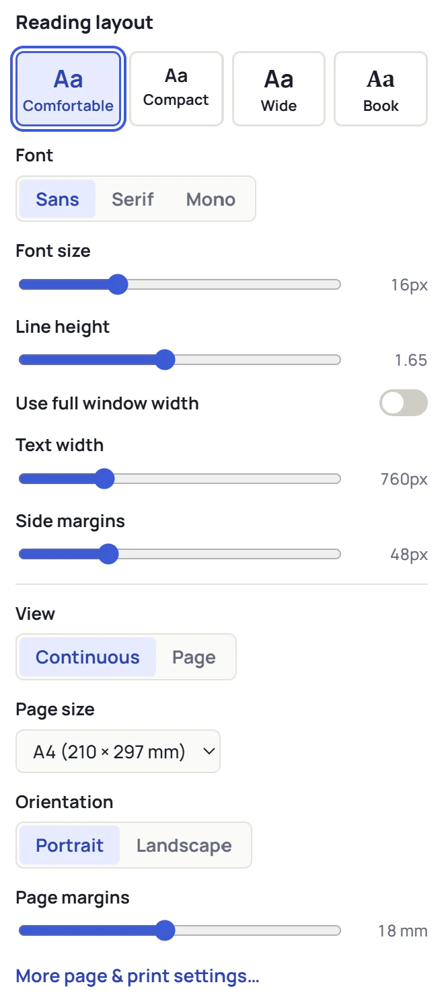
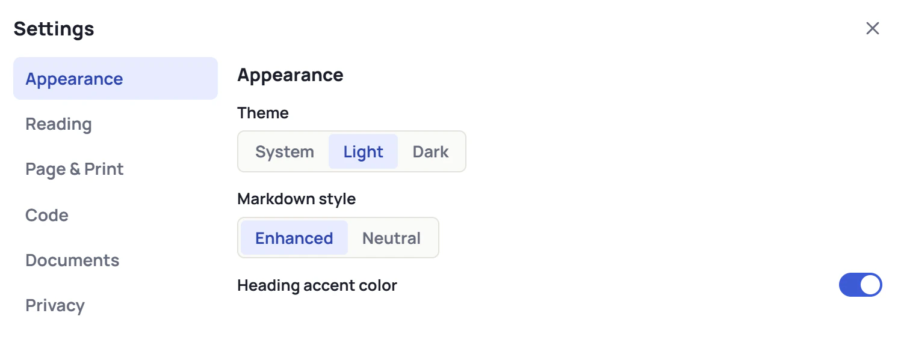

Looks like GitHub
Tables, task lists, footnotes, alerts and links render the way you are used to.
Markdown, made calm.
A lightweight Markdown viewer for Windows. Open .md files as clean, readable documents — with syntax highlighting, an outline, themes, print and PDF.
Tables, task lists, footnotes, alerts and links render the way you are used to.
Syntax highlighting for 35+ languages and a Copy button on every code block.
Jump between headings and reopen recent files. Hide the sidebar when you just want to read.
One click switches the theme. It can also follow Windows automatically.
Comfortable, Compact, Wide or Book — or set font, size and width yourself. Page view shows A4 or Letter sheets.
Print or save as PDF with a clean layout — only the document, never the buttons.
When another program changes the file, MDVibe updates it and keeps your place. Each file opens in its own window.
Same document, light and dark themes.


Windows may show a SmartScreen notice because the current build is not code-signed yet. Choose “More info” → “Run anyway” if you downloaded MDVibe from this page.
The installer never changes your default app on its own — you decide.
macOS and Linux versions are planned.
MDVibe is source-available under the MIT License with the Commons Clause: free to use — also at work — to study, modify and share. Selling MDVibe itself is not allowed.